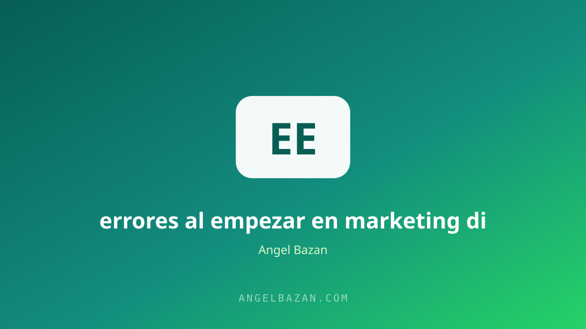

Los 10 errores al empezar en marketing digital (y cómo evitarlos)
Casi todos los que empiezan en marketing digital cometen los mismos 10 errores. Conocerlos a tiempo te ahorra meses de frustración y presupuesto.
En este artículo
Cada semana veo a alguien empezar en marketing digital con la misma emoción y, tres meses después, abandonar con la misma frustración. No es falta de talento ni de trabajo: son errores predecibles que se repiten una y otra vez. Si conoces los errores antes de cometerlos, puedes evitarlos.

Esta lista resume los 10 errores más comunes al empezar, del orden mental al manejo del dinero. Cada uno incluye la corrección práctica para no caer en él.
Errores 1 y 2: sin sistema y sin nicho
El error 1 es tratar el marketing como una serie de trucos sueltos en lugar de un sistema: tráfico → conversación → oferta → cierre → postventa. El mapa completo está en cómo crear un embudo de ventas y la base para principiantes en marketing digital desde cero.
Un sistema mínimo ya genera ventas: define la oferta, trae tráfico, conversa, cierra y mide. Los trucos suman al final; sin sistema, no hay donde sumarlos.
El error 2 es no elegir un nicho: quieres vender a todos y no le hablas a nadie. Un nicho pequeño con un dolor claro vence a una audiencia general sin foco.
Errores 3 y 4: copiar a los gurús y elegir mal el vehículo
El error 3 es copiar estrategias de éxito sin el contexto: la agencia que muestra millones gasta miles en tráfico y tiene un sistema montado. Copia la estructura, no los números, y adapta el resultado a tu etapa.
El error 4 es elegir el canal por moda en lugar del negocio. Si tu cliente vive en WhatsApp, construye ahí; el canal se elige por el cliente. Las opciones para atraerlo están en cómo encontrar clientes por internet.
El canal "correcto" es donde tu cliente ya pasa el día y donde tu contenido puede destacar. WhatsApp, TikTok e Instagram son el combo estándar de la venta conversacional; los demás se suman cuando la base funciona.
Errores 5 y 6: ignorar los datos y descuidar el seguimiento
El error 5 es decidir por corazonada: gastar en lo que "se siente" y no en lo que se mide. Cada campaña debe responder qué funciona y qué no, con datos como costo por lead y ROAS.
El error 6 es captar leads y no seguirlos: la mayoría de las ventas muere por falta de contacto posterior, no por falta de tráfico. La solución está en automatizar WhatsApp con IA y en la secuencia de seguimiento de leads.
Registra cada prueba: ángulo, creativo, público y resultado. Dos semanas de datos limpios valen más que cualquier opinión de experto sobre tu mercado. La mayoría de los negocios mueren por falta de medición, no por falta de ideas.
Errores 7 y 8: impaciencia y aprendizaje desordenado
El error 7 es esperar resultados en una semana. La fase de aprendizaje del algoritmo, el testeo y la confianza del público toman semanas. La paciencia con datos es virtud; sin datos, es solo espera.
El error 8 es aprender de todo un poco sin ejecutar nada. Elige un vehículo, domínalo y genera resultados antes de sumar otro canal.
Define un presupuesto de aprendizaje y un plazo fijo para decidir: si el costo por resultado no baja al objetivo en X semanas, se cambia; si baja, se escala. Decidir con fecha evita la duda eterna.
Errores 9 y 10: abandonar temprano y no entender al cliente
El error 9 es abandonar antes del punto de quiebre: la mayoría de las campañas mejora después del aprendizaje inicial y de varios testeos. El presupuesto para llegar ahí se calcula con nuestra calculadora de testeo.
El error 10, el más caro, es no entender al cliente: hablar de funciones cuando el cliente compra resultados. La oferta que conecta se arma como en cómo crear una oferta irresistible y el mensaje que la comunica en cómo crear contenido que venda.
Haz un ejercicio simple: escribe las tres objeciones que más escuchas y respóndelas en tu contenido y tu oferta. Cuando el cliente siente que lo entendiste, la mitad de la venta ya está hecha.
Preguntas frecuentes
¿Puedo empezar sin presupuesto? Sí, con contenido orgánico y WhatsApp; el tráfico pagado llega cuando validas el mensaje.
¿Cuál es el error más caro? No entender al cliente y quemar presupuesto en mensajes que no conectan.
¿En cuánto tiempo veo resultados reales? Entre 1 y 3 meses si sigues un sistema y mides cada paso.

Angel Bazán
Especialista en funnels, Meta Ads y WhatsApp + IA. Ayudo a negocios a vender más combinando tráfico pagado con conversaciones automatizadas.
Conoce más sobre mí →Aprende a crear y vender productos digitales con Meta Ads, WhatsApp e IA
Clases en vivo, estrategias y recursos para construir tu sistema desde cero. 🚀
Únete gratis al grupo